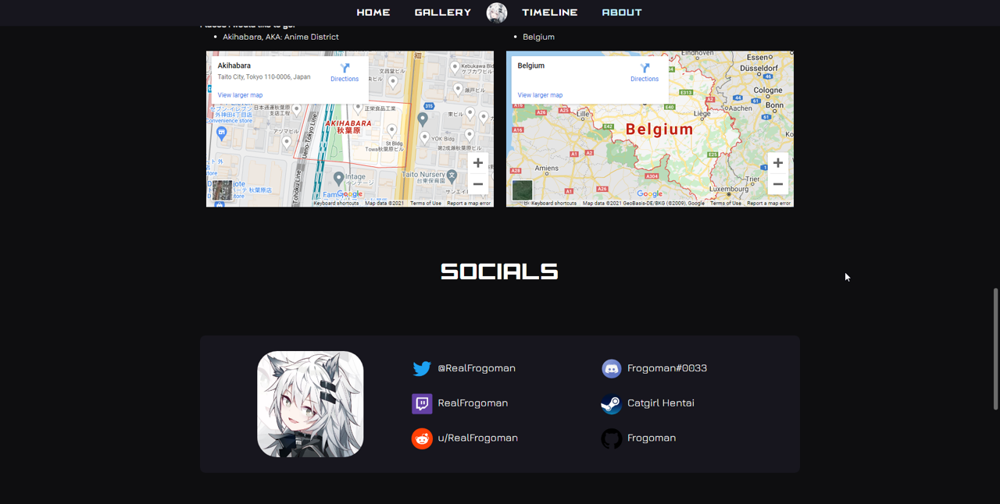
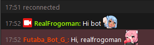

Projects
Frogo.xyz
Developed as a university project as a final assignment. Done to showcase programming projects and my favourite art pieces (mostly anime style).
Sokoban in Z80 Assembly
Sokoban game developed in the Z80 Assembly language as a university project.
Controls are WASD for movement and O for reset.

Twitch Bot Template
A template for a basic twitch bot thats answers to a certain word or a combination of 2 words. It also includes some examples on how to make it react to words.
Youtube playlist to Excel
Python script developed as a personal project to transfer data about a youtube playlist into an Excel file for ease of access.
It imports the following information to the Excel file: position, video name, channel name, youtube link and duration.
Maze Generator & Minigame
C# program that creates a randomly generated maze following Prim's Algorith and displaying it with C# Forms.
It also includes a minigame to move around the maze so you can try to solve it before the timer runs out.
Future projects